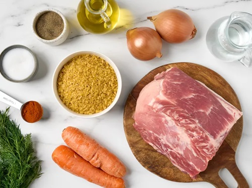
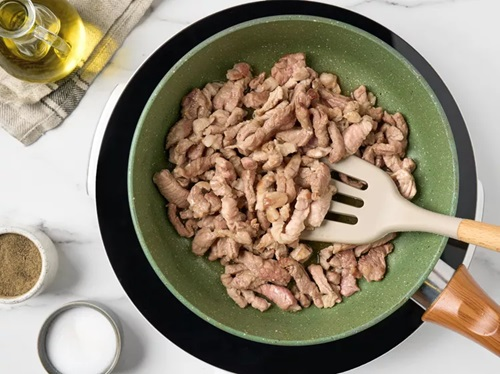
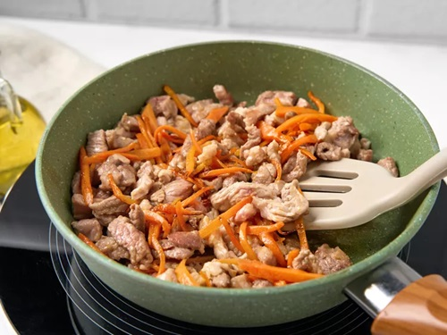
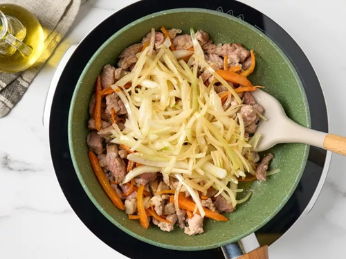
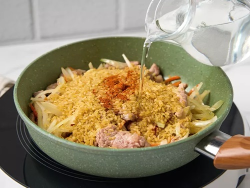
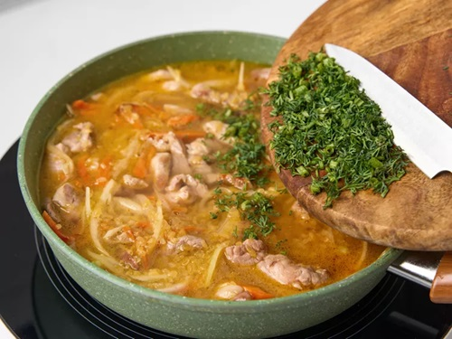
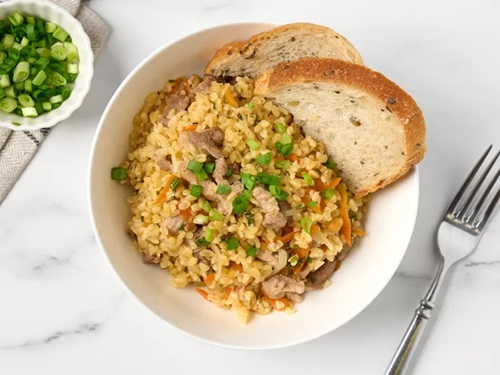

|
|
супы салаты гарниры десерты мои рецепты |
Булгур со свининой и овощамиОбжарьте нарезанную брусочками свиную шею, добавьте морковь и лук, а затем всыпьте булгур и оставьте тушиться. Специй можно добавить совсем немного. Достаточно соли, перца и паприки, чтобы получился вкусный и сытный обед или ужин. Булгур не нуждается в предварительной подготовке. Его не надо ни промывать, ни замачивать. Просто обжарьте его перед тем как залить водой. А когда крупа будет готова, дайте ей немного настояться и впитать соки и ароматы остальных продуктов. Ингредиенты
ПриготовлениеПодготовкаСнимите шелуху с лука. Помойте и почистите морковь. Промойте и обсушите укроп. Шаг 1Нарежьте свинину тонкими брусками или кубиками небольшого размера. Разогрейте сковороду с растительным маслом и жарьте мясо, помешивая, около 30 минут. Посыпьте перцем и солью, перемешайте. Шаг 2Нарежьте морковь тонкой соломкой или натрите на терке для моркови по-корейски. Добавьте к свинине. Жарьте, помешивая, около 10 минут. Шаг 3Нашинкуйте лук полукольцами. Положите в сковороду к мясу и моркови. Жарьте еще 5–6 минут. Шаг 4Добавьте булгур. Непрерывно помешивая, обжарьте 3 минуты. Влейте воду, посолите и перемешайте. Всыпьте паприку. Не перемешивая, прогрейте в течение 1 минуты. Затем смешайте с остальными ингредиентами сковороды. Шаг 5Измельчите укроп. Добавьте в сковороду, накройте посуду крышкой и оставьте на слабом огне на 20 минут. Снимите сковороду с плиты. Перемешайте содержимое и дайте настояться под крышкой еще 10 минут. ПодачаПодайте булгур со свининой и овощами, посыпав зеленым луком. |
Наверх |
| © рецепты без лишних слов |